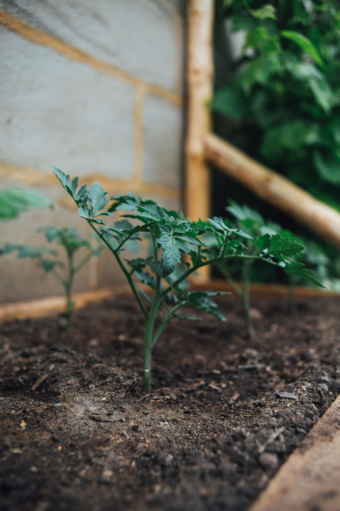
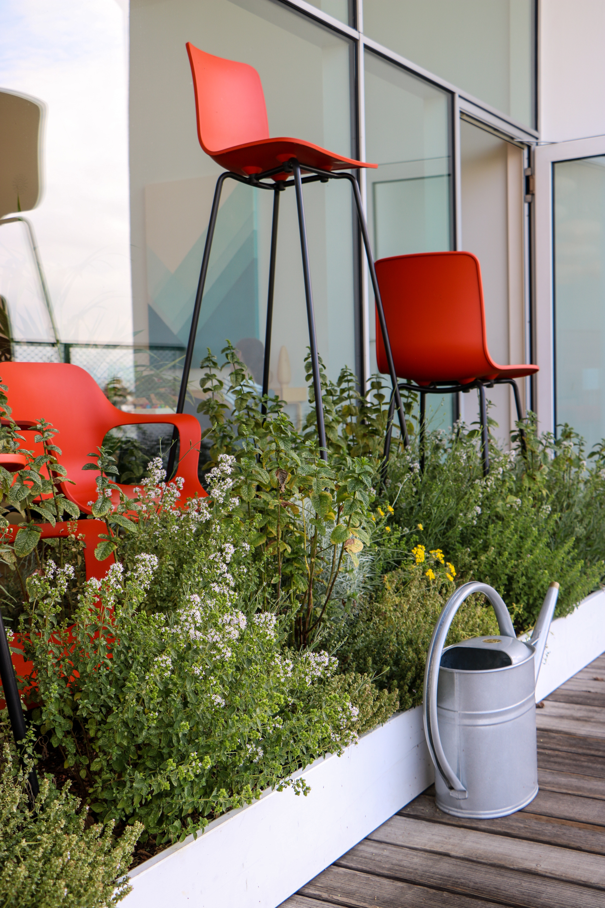
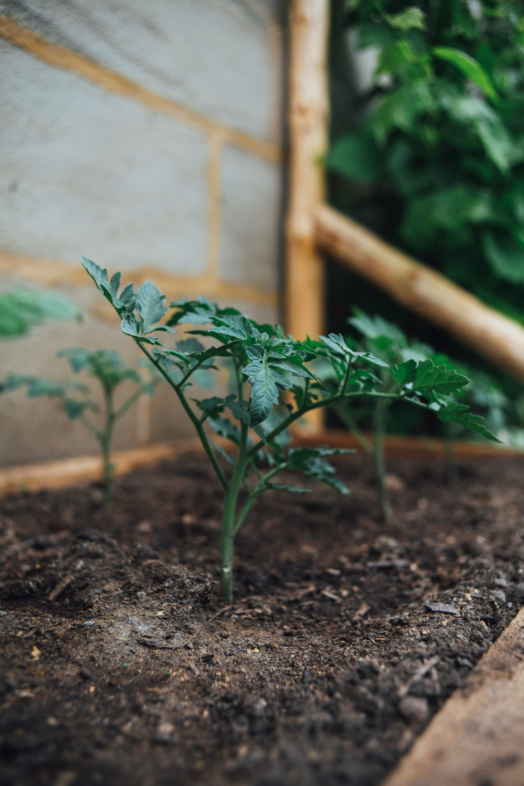
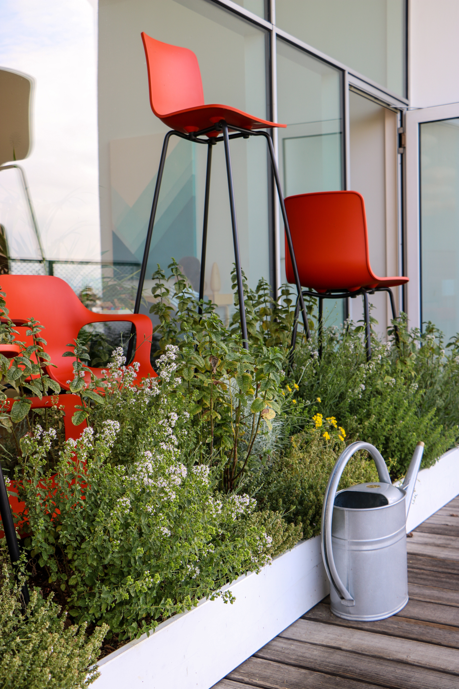

The advantages such as access to fresh produce, space utilization, mental well-being, and contributing to a greener environment....
Welcome to the vibrant world of urban gardening, where concrete jungles are transformed into beautiful oases teeming with life. Urban gardening is an art form, a sanctuary and a sustainable practice that transcends the boundaries of space and resources. Whether you live in a bustling urban apartment, a cozy suburban townhouse or a high-rise apartment, cultivating your green paradise is not only possible, but immensely rewarding.
In an era marked by the rapid pace of urbanization, the idea of nurturing your own garden amidst skyscrapers and busy streets might seem far-fetched. However, urban gardening stands as a beacon of hope, inviting you to reconnect with nature in the midst of urban chaos. It’s a testament to our ability to create pockets of greenery, fostering biodiversity, and enhancing the quality of life within our city confines.
The beauty of urban gardening lies in its accessibility and adaptability. You don't need acres of land or profound horticultural expertise to start. All you need is a small balcony, a windowsill, or even a corner of your kitchen to embark on this fulfilling journey.
As you delve into urban gardening, remember you're not alone. Join local gardening groups, online forums, or visit community gardens. Sharing experiences, tips, and even surplus produce creates a sense of camaraderie and inspires collective growth.
Urban gardening is not just about cultivating plants; it's about fostering a deeper connection with nature and embracing sustainability in our everyday lives. Whether you seek solace in nurturing greenery or aspire to contribute to a greener world, urban gardening welcomes all with open arms.
Embark on this green journey today and witness how a small patch of nature amidst urban chaos can bring immeasurable joy, peace, and a newfound appreciation for the green miracles around us.
 



The advantages such as access to fresh produce, space utilization, mental well-being, and contributing to a greener environment....

Steps for beginners: Starting with small containers or plots, understanding sunlight requirements, selecting suitable plants for small spaces, etc. Soil preparation: Tips on soil selection, composting, or creating organic soil mixes....